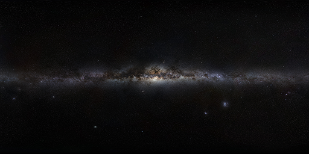
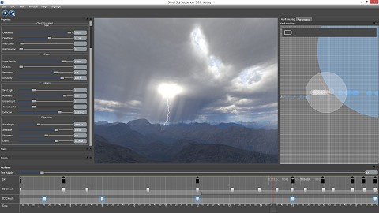
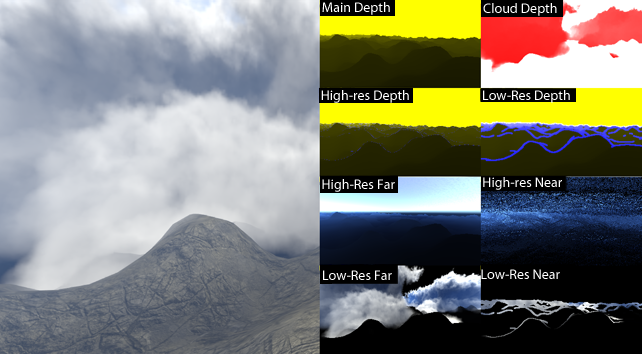

Rendering Techniques within trueSKY¶
All Simul’s default renderers use a right-handed co-ordinate system with x pointing East, y North, and z up. All units of distance are metres or kilometres. If not specified as km, distance is in metres. Angular units are radians, unless specified as degrees. Temperature is in kelvins, unless specified as degrees Celsius.
Weather Rendering is handled by BaseWeatherRenderer. The Weather Renderer owns and manages renderers for sky, clouds, atmospherics and other effects. So the Weather Renderer is the main interface between your program and trueSKY.
Clouds¶
The cloud keyframer is updated from Environment.
Some CloudKeyframe properties are used as per-keyframe values to generated the cloud textures. These textures are then interpolated for rendering:
Clouds are usually drawn to a pair of lower-resolution buffers. The CloudRenderer keeps the cloud volume textures up to date, and draws the clouds volumetrically.
Cosmic Background¶
The cosmic background texture is drawn first, at an orientation that corresponds to the plane of the Milky Way galaxy - see SetBackgroundBrightness.
It uses a plate-carree projection, aligned with the galactic horizon. Given the vector “view”, which is the direction in galactic co-ordinates, the calculation is: .. code-block:
*float az =atan2(view.y,-view.x);*
*vec2 texcoord =vec2((ang/(pi*2.0)),0.5-asin(view.z)/pi);*
i.e. the x coordinate is proportional to the azimuth, and the y coordinate is proportional to the elevation
You may see some stretching at the top and bottom of the image due to degeneracy of the projection, so it is preferable to have the texture fade to black at the top and bottom edges.
Sun and Stars¶
The sun is drawn after the stars.
Stars are drawn as point sprites, and spun around the axis of the Earth’s rotation, in the same direction as the sun. Stars are usually drawn to the highest-resolution buffer (i.e. the frame buffer or final buffer). See StarBrightness and MaxStarMagnitude.
Planets¶
Planets (e.g. the Moon) are drawn by BaseSkyRenderer. A planet texture map needs to be supplied, and the shader takes a sun direction as a parameter - this is used to light the planet (e.g. phases of the moon). Like stars, planets are usually drawn to the highest-resolution buffer, in order to make sure they have sharp outlines.
Sky and Atmospherics¶
The sky and atmospherics are drawn to a volumetric texture for which the x and y axes are screen coordinates, and the z axis is distance. The final compositing step puts the sky, atmospherics and clouds to the current rendertarget.
Performance¶
Rendering performance is mostly dependent on the number of pixels drawn, and the number of raycasting steps (or Cloud Slices). Calculation performance - mainly cloud lighting - depends strongly on the grid size - the larger the grid, the more time will be taken to light a cloud keyframe.
It is usual to downsample the cloud part of the sky rendering, controlled by MaximumCubemapResolution in the CloudRenderingOptions.
Go to our performance page to learn more about how to monitor trueSKY’s performance, along with ways to improve it.
Rain and Snow¶
The precipitation is used to control the amount of rain or snowfall at a given time, whilst the PrecipitationThresholdKm property is used to set the thickness of cloud required for rain to fall (setting this to 0 will allow even the smallest of clouds to produce rain). To switch between snow and rain use rain_to_snow (where 0 is rain, 1 is snow).
Each cloud keyframe has a PrecipitationRegion, which defines the local area of precipitation, if it is not global for the keyframe. The amount of particles used for precipitation can be altered with the MaxParticles property.
Classes derived from simul::clouds::BasePrecipitationRenderer are used to draw the rain or snow particles, while the link simul::clouds::PrecipitationRegion rain streak effectendlink is drawn by the cloud renderer. This class has a property “UseSimulationTime” which determines whether rain and snow speed is based on the simulated time-of-day, or real time in seconds.
Shaders¶
trueSKY uses effects for rendering. An effect is a collection of shaders - vertex shaders, pixel shaders and so on, along with information on how to combine them, how to set render state when they are used, and what inputs they take.
Platform-specific derived classes of link simul::crossplatform::Effect Effectendlink are created with link simul::crossplatform::RenderPlatform::CreateEffect RenderPlatform::CreateEffectendlink, usually with an extensionless filename passed to the function.
The RenderPlatform first looks for a platform-specific shader source file by appending its platform shader file extension - .fx effect files for DirectX, .glfx files for GLSL etc. If this is not found, the cross-platform .sfx extension is appended.
The #include directive has been enabled - DirectX handles this by design; while Simul has implemented #include for GLSL. Platform-specific include files have the suffix .hlsl, .glsl, etc., while cross-platform includes have extension .sl.
As far as possible, the functional aspects of shading are defined in cross-platform shader include files, which have been given the .sl suffix, and can be found in the Simul/Platform/CrossPlatform/SL directory.
In order for the different shader languages to use these common files, each platform has a special file that is included before any .sl files, and which contains definitions needed for the .sl files, including macros and functions - see CppHlsl.hlsl, etc.
Constant Buffers¶
Older versions of GLSL, and DirectX 9, pass constants to shaders individually. .. code-block:
(in HLSL)
float brightness;
(in C++)
D3DXHANDLE h=effect->GetParameterByName(NULL,"brightness");
effect->SetFloat(h,1.0);
OpenGL 3.0 and DirectX 11 have the capability to use em constant em buffers instead, so if we define in the shader:
(in GLSL)
layout(std140) uniform ShaderConstants
{
uniform float brightness;
uniform float gamma;
uniform float bloom;
};
etc., and in C++:
struct ShaderConstants
{
float brightness;
uniform float gamma;
uniform float bloom;
};
it is then possible to set the values of the whole structure in C++, and pass it complete to the shader. For cross-platform constant buffers, we define:
SIMUL_CONSTANT_BUFFER
SIMUL_CONSTANT_BUFFER_END
and these macros have different expansions depending on whether the header is being used in C++, or in a shader compilation.
Mixed Resolution Rendering¶
TrueSKY’s cloud rendering is usually performed at below the full resolution of the screen. This is because, as a raytracing system, its efficiency is highly dependent on the number of pixels drawn. To draw at 1/4 the full resolution, for example means rendering 1/16th the number of pixels, with significant time savings.
However, clouds and Simul’s other volumetric effects can be blended seamlessly with the full-resolution scene, even taking into account MSAA anti-aliasing. To do this, trueSKY uses a mixed-resolution compositor.
Mixed-resolution compositing in trueSKY
The downscaling is set as a property of the weather renderer:
weatherRenderer->SetDownscale(4);
The depth values passed to the weather renderer in your depth texture are processed to obtain the needed information for the compositing. This processing uses the projection matrix passed in in your DeviceContext object. The most efficient projection is usually the depth-reversed style, for which the far plane is at z=0.
Using trueSKY’s compositor for other things¶
trueSKY’s mixed-resolution compositor can be useful for blending other effects, like particle systems, into the scene. To do this, you can adapt RenderMixedResolution, or the function it calls, RenderLowResolutionElements. You will need to fill in two rendertargets: one for the far depth, one for the near.
For the far pass, use the x-component of the lowResDepthTexture as depth. For the near pass, use the y-component, but discard fragments whenever the z-component is zero (z represents edges).